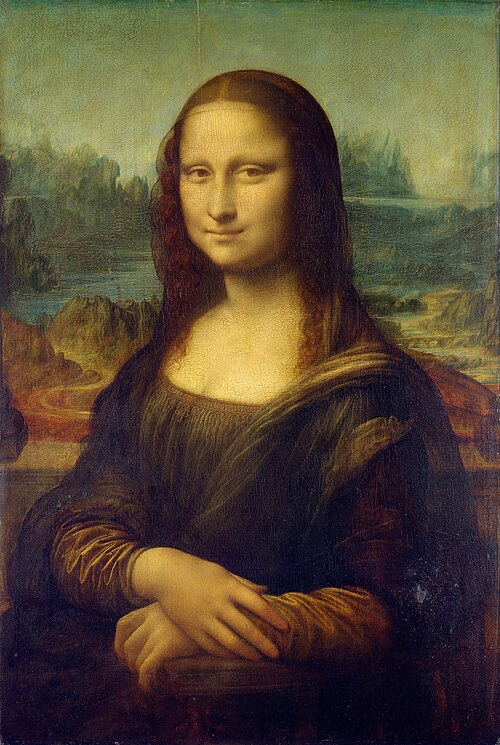
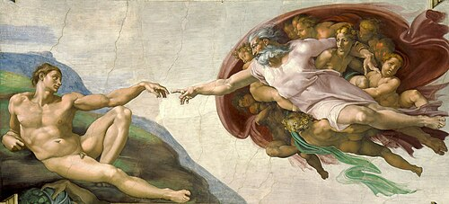
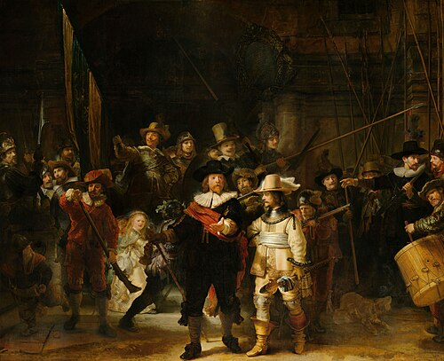
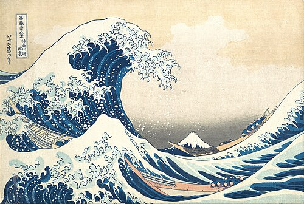
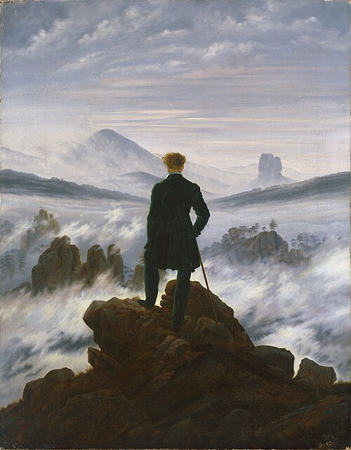
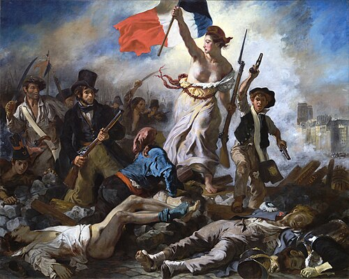
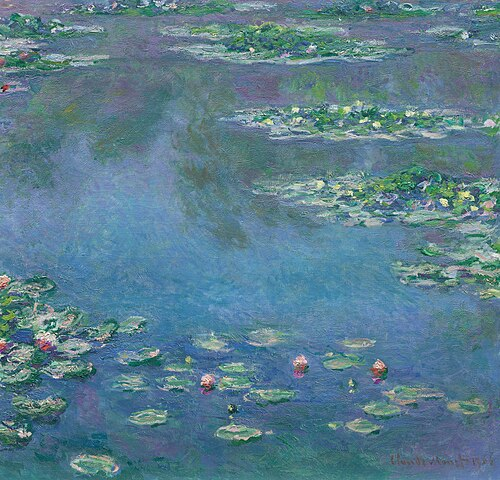
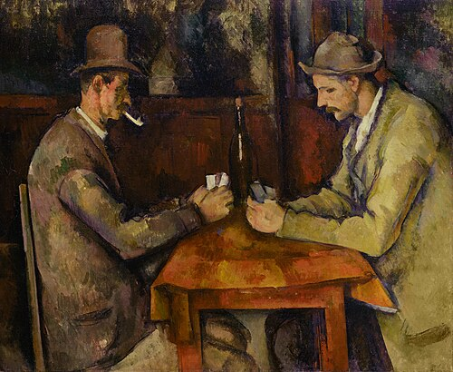
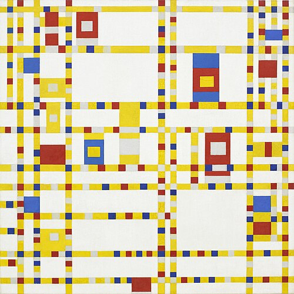
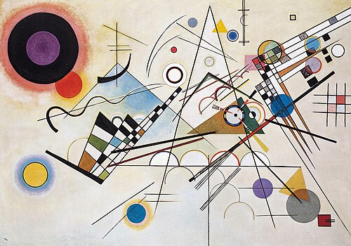

#6A5D3C
rgb(106, 93, 60)
Mona Lisa
Leonardo da Vinci · c. 1503–1519
#AD9F80
rgb(173, 159, 128)
The Birth of Venus
Sandro Botticelli · c. 1484–1486
#B1A38C
rgb(177, 163, 140)
The Creation of Adam
Michelangelo · c. 1508–1512
#868162
rgb(134, 129, 98)
The Garden of Earthly Delights
Hieronymus Bosch · c. 1490–1510
#685D4E
rgb(104, 93, 78)
Girl with a Pearl Earring
Johannes Vermeer · c. 1665
#49361B
rgb(73, 54, 27)
The Night Watch
Rembrandt · 1642
#3B2D1E
rgb(59, 45, 30)
Las Meninas
Diego Velázquez · 1656
#D3CFC0
rgb(211, 207, 192)
The Great Wave off Kanagawa
Katsushika Hokusai · c. 1831
#929094
rgb(146, 144, 148)
Wanderer above the Sea of Fog
Caspar David Friedrich · c. 1818
#5A4834
rgb(90, 72, 52)
The Third of May 1808
Francisco Goya · 1814
#797678
rgb(121, 118, 120)
Liberty Leading the People
Eugène Delacroix · 1830
#8D816E
rgb(141, 129, 110)
The Fighting Temeraire
J. M. W. Turner · 1839
#5C6C7D
rgb(92, 108, 125)
The Starry Night
Vincent van Gogh · 1889
#C0B25A
rgb(192, 178, 90)
Sunflowers
Vincent van Gogh · 1888–1889
#608190
rgb(96, 129, 144)
Water Lilies
Claude Monet · 1906
#717164
rgb(113, 113, 100)
Impression, Sunrise
Claude Monet · 1872
#878575
rgb(135, 133, 117)
A Sunday Afternoon on the Island of La Grande Jatte
Georges Seurat · 1884–1886
#696A5E
rgb(105, 106, 94)
Bal du moulin de la Galette
Pierre-Auguste Renoir · 1876
#614A2D
rgb(97, 74, 45)
The Card Players
Paul Cézanne · 1890s
#9B8B56
rgb(155, 139, 86)
The Kiss
Gustav Klimt · 1907–1908
#816252
rgb(129, 98, 82)
The Scream
Edvard Munch · 1893
#E0D8C1
rgb(224, 216, 193)
Broadway Boogie Woogie
Piet Mondrian · 1942–1943
#CEC6BE
rgb(206, 198, 190)
Composition VIII
Wassily Kandinsky · 1923